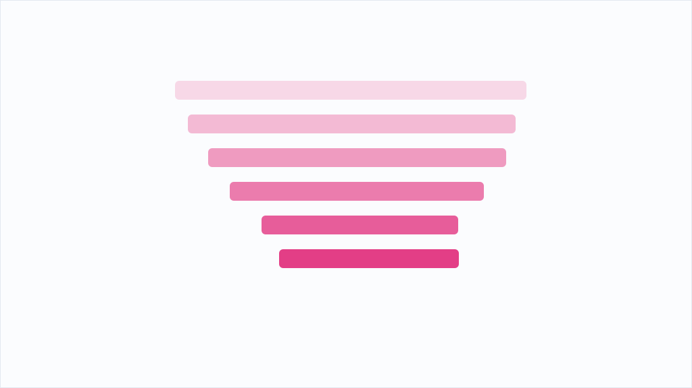

AIエージェントに本番UPDATEをさせる前に置くべき「承認ゲート」設計

AIエージェントに本番DBのUPDATEを任せると、リスクの性質が変わる。人間なら暗黙に確認している「これは本番か」「WHERE句の範囲は意図どおりか」といった前提を、エージェントは推測で埋めてしまう。しかもそれらしく「更新しました」と報告してくるので、取り違えに気づくのが遅れる。UPDATEは上書きされたら元の値が戻らない。失敗が可逆でないのに、失敗に気づくのが遅れる。ここが設計で一番押さえるべき点である。
この記事が示すのは、承認が下りるまで破壊的操作を一切走らせないための多段の承認ゲートである。Gate Aで対象のDB・期間・種別を人間との対話で確定させ、Gate Bで読み取りのみで件数とサンプルを提示し、Gate Cで対象の要約を添えて明示的にGoを出す。Gate Dでは承認された範囲だけを実行し、記録を残す。技術的な要は、WHERE句の危険な軸を固定パラメータとして外から与え、Gate Bで確認した対象のIDリストを実行時のキーにすることだ。こうすればプレビューと実行の間で対象がずれる余地が構造的になくなる。危険な操作も原子スキルに分解し、承認を通過していなければ更新スキルを呼べない順序制約をオーケストレータに持たせる。
面白いのは、議論で指摘されている落とし穴である。関門が正しくても「一度も呼ばれていない」ことがあり、出力が「弾いた件数0」だと正常に見えてしまう。0件弾いたのか、0件しか検査していないのかは区別できない。だから関門には必ず検査件数という分母を出させる。また1箇所に集約しても、迂回する経路が1本残れば意味がない。IAM認証を外して別方式に切り替えた際に読み取りの防御が抜けていた例は、守りを外すときは何を守っていたかを数え直せという教訓になる。承認ゲートは、エージェントを縛る仕組みであると同時に、人間が一瞬油断しても本番に届かない経路を先に用意しておく仕組みだと読める。
中小企業でも、AIに基幹データを書き換えさせる前に、対象件数を先に見せる一手を入れるのが第一歩になる。承認は「はい」ではなく、何件、どの範囲に対してかを言わせる形にすると効く。
※ 上記は配信元記事をもとにAIの鬼編集部が要約・再構成したものです。正確な内容は出典元をご確認ください。
このニュースの全文は、配信元でお読みいただけます。 Zenn AIで元記事を読む →